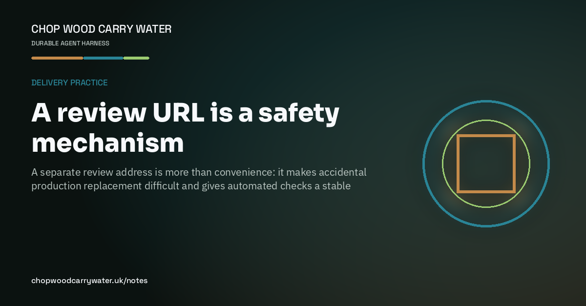

Delivery practice · 15th August 2026
A review URL is a safety mechanism
A separate review address is more than convenience: it makes accidental production replacement difficult and gives automated checks a stable target.

A website review started with a deployment constraint: GitHub Pages serves one production tip for the repository. Pointing it at a review branch would not create a harmless preview. It would replace the live site.
The safer shape was simple. Production stayed where it was. A separate review address served the candidate build from the same repository, with an unmistakable review banner. Stakeholders had one stable place to inspect, while the public address remained untouched.
That separation also made the checks useful. Playwright could crawl the sitemap on desktop and mobile, verify canonical URLs, headings, image alternatives, overflow, browser errors and share controls. Lighthouse could inspect the local static build without a review banner contaminating the result. The checks found ordinary defects — metadata gaps, image weight, fonts and hierarchy — before they became production defects.
I now see the review URL as poka-yoke: a small design choice that makes the wrong action harder. Review infrastructure is part of product quality when it protects the live surface and gives humans a calm, repeatable place to decide.